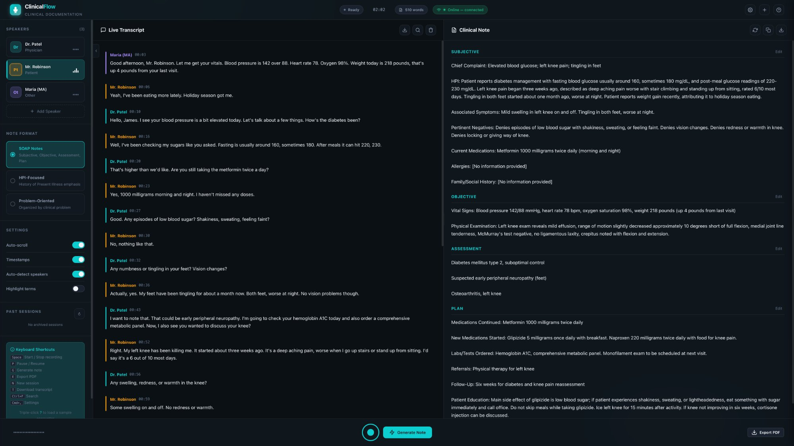
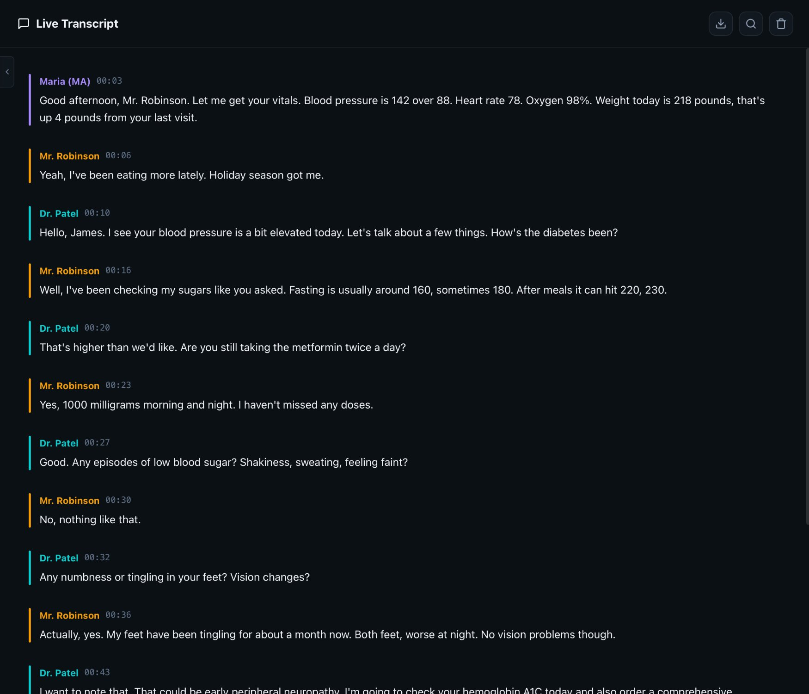
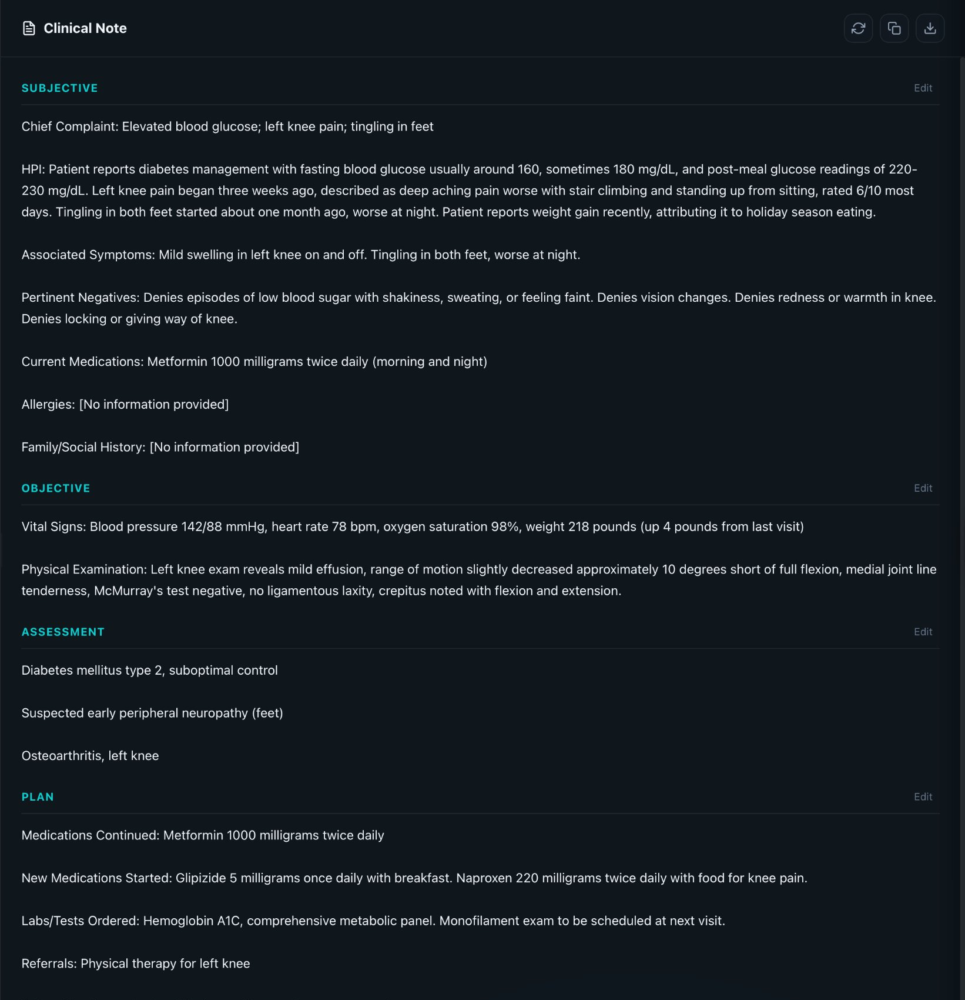
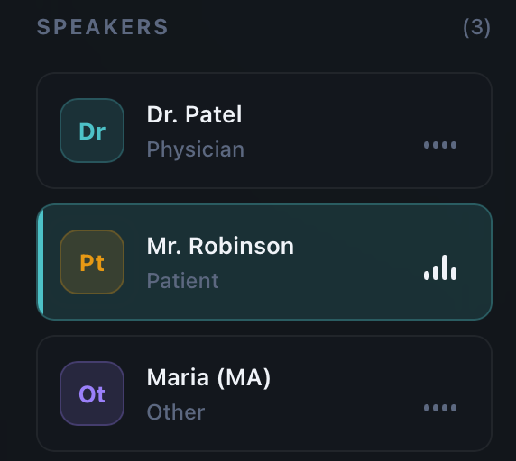
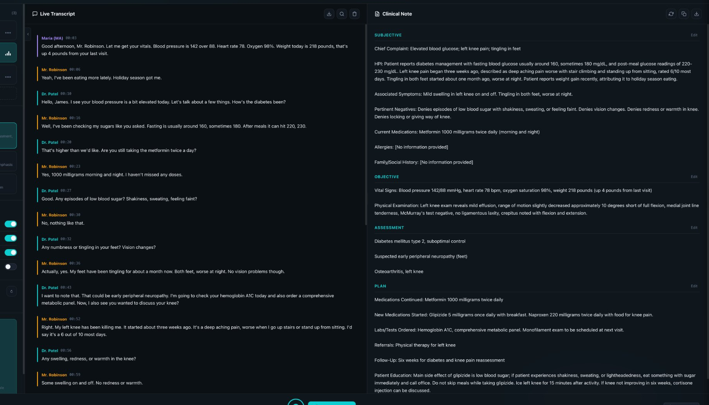
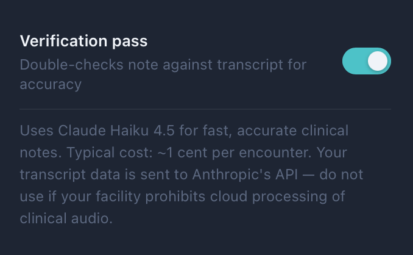
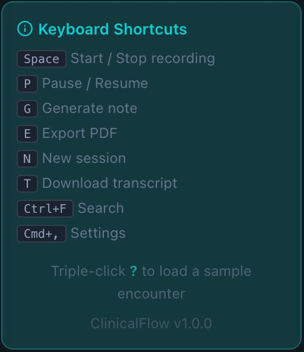
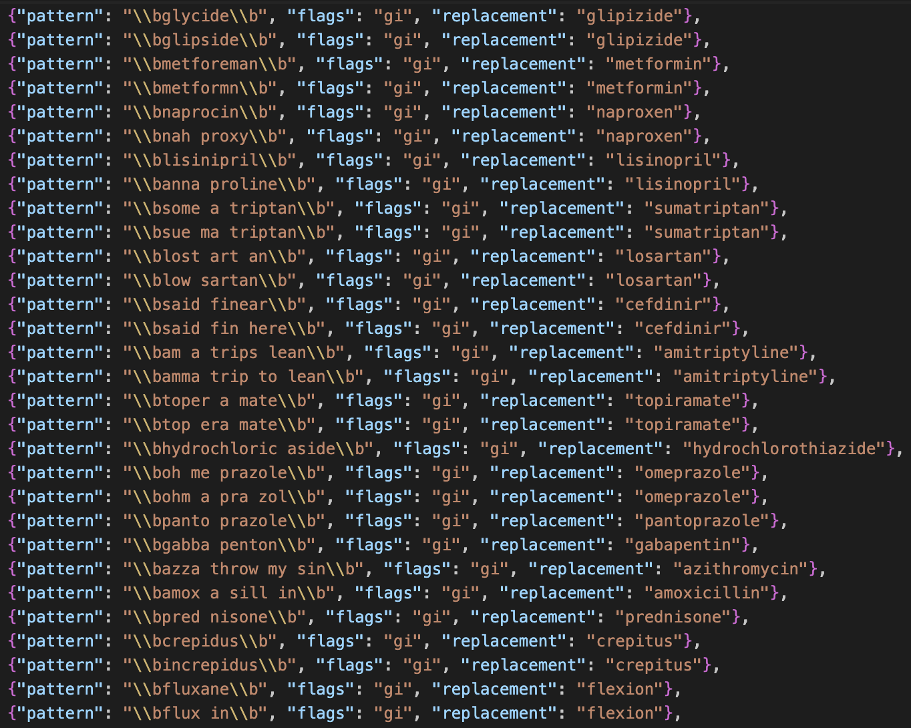

ClinicalFlow listens to your patient encounters and generates structured clinical notes in real time — with 20 specialty templates, interactive dental charting, and automatic medical coding. Works online or completely offline in 37 languages. Start your 14-day free trial.

Clinical documentation consumes hours every day — time that should be spent with patients. The result is burnout, reduced care quality, and notes finished long after the encounter ends.
From encounter to signed note in minutes, not hours.
Start recording your patient encounter. ClinicalFlow captures audio and transcribes speech in real time with automatic speaker identification — distinguishing physician from patient in 37 languages.
With one click, AI analyzes the full transcript and produces a structured clinical note in your preferred template — from SOAP to cardiology to dental exams. A verification pass catches errors, contradictions, and omissions.
Edit any section directly in the app. Billing codes are generated automatically. When you’re satisfied, export as PDF, copy to clipboard for your EHR, or save as a text file. The note is ready in minutes.
Built for real clinical workflows by people who understand medicine.
ClinicalFlow transcribes speech as it happens. Words appear on screen within milliseconds, letting you monitor the encounter in real time. No waiting, no post-visit processing.

One click transforms your transcript into a complete, structured clinical note. ClinicalFlow uses a sophisticated prompt system with strict evidence-extraction rules — every line in the note traces back to something explicitly said in the encounter.

Add and manage speakers with assigned roles. Each speaker gets a unique color in the transcript, making it easy to scan who said what. ClinicalFlow uses speaker identity to correctly route information — patient-reported symptoms go to Subjective, physician observations go to Objective.

Every section of the generated note is directly editable. Click on any text to modify it. Your edits are preserved through exports — what you see is what you get.

Choose the note structure that matches how you practice. Switch anytime, or create your own custom templates.
The most widely used formats in outpatient medicine. Four clean sections that separate patient-reported information from clinical findings, assessment, and treatment plan.
Structured formats designed for mental health encounters. DAP for psychiatry sessions and BIRP for behavioral health documentation.
Purpose-built templates with sections tailored to each specialty’s documentation needs and exam elements.
Complete dental documentation with integrated charting. From general exams to endodontic evaluations and oral surgery consults.
Templates for annual wellness visits, preventive care, and standalone procedure documentation.
Create and save your own note templates with custom section names and structure. Perfect for unique workflows or niche specialties not covered by the built-in library.
An interactive SVG dental chart that integrates directly with AI note generation and billing codes.
Full adult (32-tooth) and primary (20-tooth) charts with one-click toggle between permanent and deciduous dentition.
Healthy, Decay/Caries, Missing, Restored, Implant, Root Canal, Fracture, and Impacted — each with a distinct color for instant visual identification.
M, O, D, B, L for posterior and M, I, D, F, L for anterior teeth. Anatomical validation prevents impossible surface combinations.
Dental findings serialize directly into the AI prompt for note generation and parse back from AI responses. Acronym protection for FPD, RPD, SDF. Chart SVG and findings table export to PDF.
Toggle perio mode to overlay probing depths, bleeding, recession, mobility, and furcation data directly on the chart — enter measurements by voice or click.
Record MB, B, DB, ML, L, and DL depths per tooth. Color-coded pills — green (1–3 mm), yellow (4–5 mm), red (6+ mm) — overlay directly on the chart for instant visual assessment.
Say “three two four” and probing depths auto-fill for the selected tooth. The perio voice parser recognizes spoken numbers and maps them to the correct surfaces — hands-free charting during exams.
Track bleeding on probing per site, recession measurements, mobility grades (0–3), and furcation involvement (Class I–III). All indicators render as visual overlays on each tooth.
After note generation, a template-specific checklist scores your documentation completeness — verifying chief complaint, probing depths, BOP, bone loss, AAP staging, consent, and more.
ClinicalFlow suggests billing codes from the generated note — saving time on coding and helping capture visit complexity.
Up to 8 diagnosis codes per encounter, each with a confidence level. Extracted directly from the assessment section of the generated clinical note.
Up to 4 procedure codes with automatic E&M level assessment based on documented complexity, time, and medical decision-making.
D-codes with 4 guardrails: depth/severity escalation, structural vs. positional trauma detection, etiology of absence tracking, and dental-specific ICD-10 pairing.
Every code suggestion includes AI-generated audit flags that identify potential billing risks — upcoding warnings, missing documentation, and modifier requirements. Displayed in a collapsible panel for quick review.
Automated warnings flag clinical documentation gaps — missing informed consent, undocumented allergies, incomplete exam findings. Helps catch issues before the note is finalized.
Enable or disable automatic code suggestions per session. When enabled, ICD-10, CPT, and CDT codes appear immediately after note generation. Toggle from the AI & Transcription settings.
Export notes to your EHR, sync with your practice management system, and generate insurance narratives — all from within ClinicalFlow.
Copy notes formatted for your EHR or export as HL7 FHIR documents. Configure facility name, facility ID, and default patient MRN for compliant clinical document exchange.
Sync patient data and clinical notes directly with OpenDental (REST API), Dentrix (SOAP/COM), and Eaglesoft (ODBC). Configure connection credentials and test connectivity from Settings.
One-click AI generation of 3–7 sentence medical necessity narratives. References specific clinical data — probing depths, BOP percentage, radiographic bone loss, tooth diagnoses — with CDT and ICD-10 citations.
Choose the engine that fits your needs. Deepgram for streaming, Groq for free cloud Whisper, or go fully offline.
Maximum accuracy using cloud AI models purpose-built for clinical documentation.
Cloud Whisper transcription with near-instant speed. Free API key, no credit card required.
Everything runs on your machine. No internet. No data leaves your computer. Ever.
Unlike simple AI scribes that generate and ship, ClinicalFlow runs a second pass. After generating the note, a separate AI verification step (temperature 0.1 for maximum determinism) audits every claim against the original transcript — catching errors before they reach the chart.

ClinicalFlow is designed around 10 keyboard shortcuts and minimal clicks. Start recording, generate a note, and export — all without touching the mouse.

Speech-to-text engines often garble medical terminology. ClinicalFlow applies 204 correction patterns across 6 languages after transcription, automatically correcting drug names, conditions, units, and vital sign formats.

Full pipeline support — transcription, correction patterns, note generation, and UI locale — in every language.
Complete transcription and note generation pipeline including English, Spanish, French, German, Portuguese, Japanese, Korean, Chinese, Hindi, Arabic, and 27 more.
Dedicated medical term correction patterns in English (82), Spanish (30), French (29), German (21), Portuguese (21), and Italian (21).
Post-processing rules that automatically fix misrecognized drug names, conditions, vitals, and medical terminology across all 6 dictionary languages.
ClinicalFlow implements HIPAA technical safeguards at every layer.
All session data, transcripts, clinical notes, and API keys are encrypted on disk using AES-256-GCM with PBKDF2-HMAC-SHA256 key derivation (100,000 iterations). Even if your device is stolen, patient data is unreadable without your PIN.
A 4–8 digit numeric PIN is required every time ClinicalFlow launches. Verified using Argon2id hashing with random salt and never stored in plaintext. Auto-lock engages after 5 minutes of inactivity (configurable) to protect unattended devices.
Structured logging captures every operation with timestamps — but never logs transcript text, patient names, or clinical content. Logs are rotated daily and automatically cleaned after 30 days.
In online mode, data is sent only to Deepgram (audio) and Anthropic (transcript) over encrypted TLS connections. Strict Content Security Policy headers limit connections to only these approved endpoints. In offline mode, zero network requests leave the device.
All writes use a temporary file + rename pattern to prevent corruption from unexpected shutdowns. If a file is detected as corrupted, it’s automatically backed up to a .corrupted.TIMESTAMP file before recovery. macOS hardened runtime with audio input and network client entitlements.
The local Whisper transcription server binds exclusively to 127.0.0.1 — no network exposure, no external access. Audio data never leaves your machine’s loopback interface.
ClinicalFlow is lightweight. Offline mode needs more resources for local AI models.
When using cloud transcription and cloud AI, the app itself is very lightweight.
Local Whisper and Ollama models require more compute. A recent Mac with 16 GB+ RAM is ideal.
14-day free trial — no credit card required. Sign up, choose your plan, and generate your first note in under two minutes.
Version 1.0.0 · Bundled Whisper model: 574 MB
After your 14-day trial, ClinicalFlow Pro starts at $25/month. See all plans →
Start your free 14-day trial and generate your first note in under two minutes.